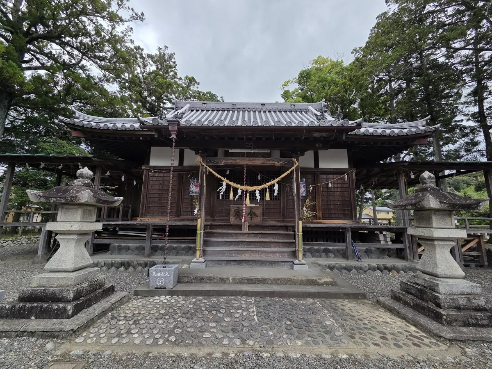
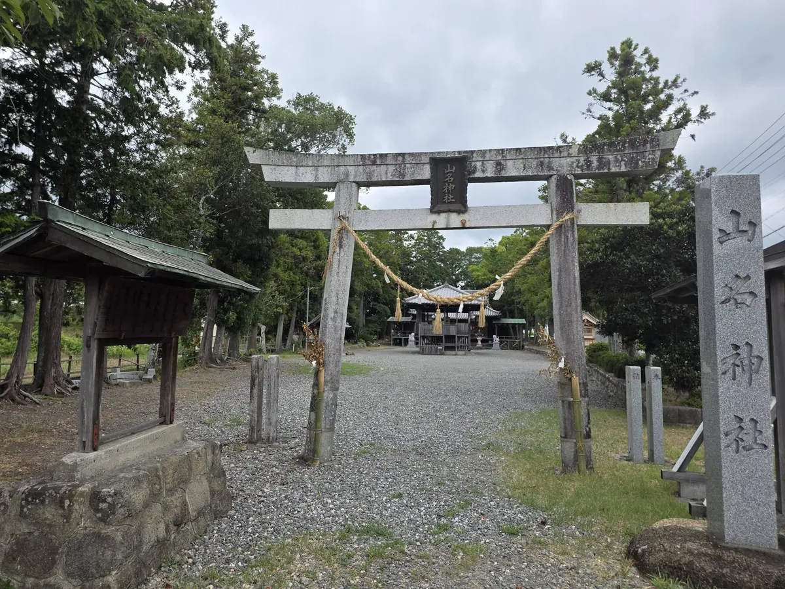
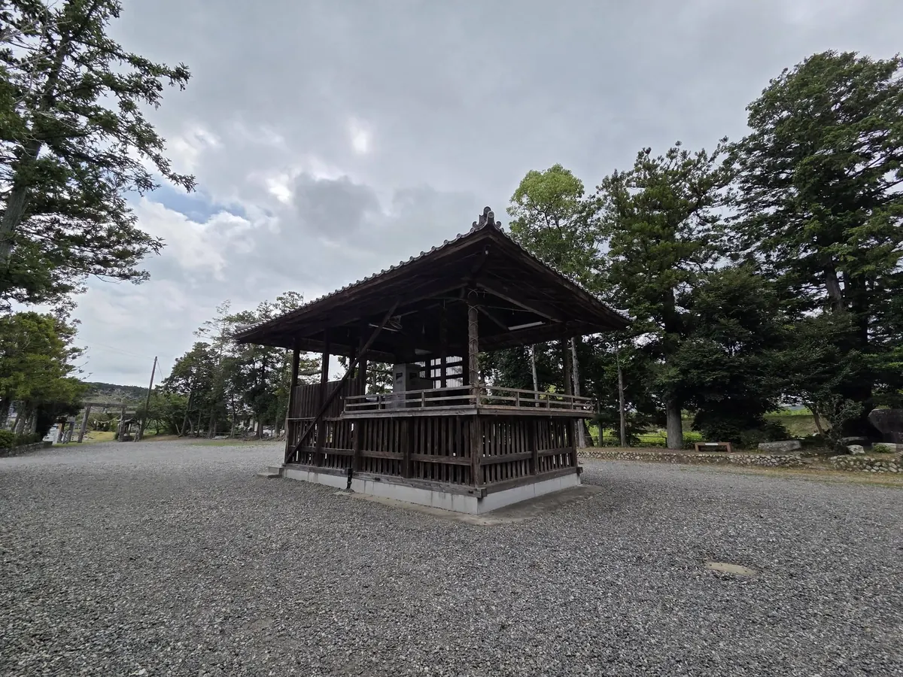
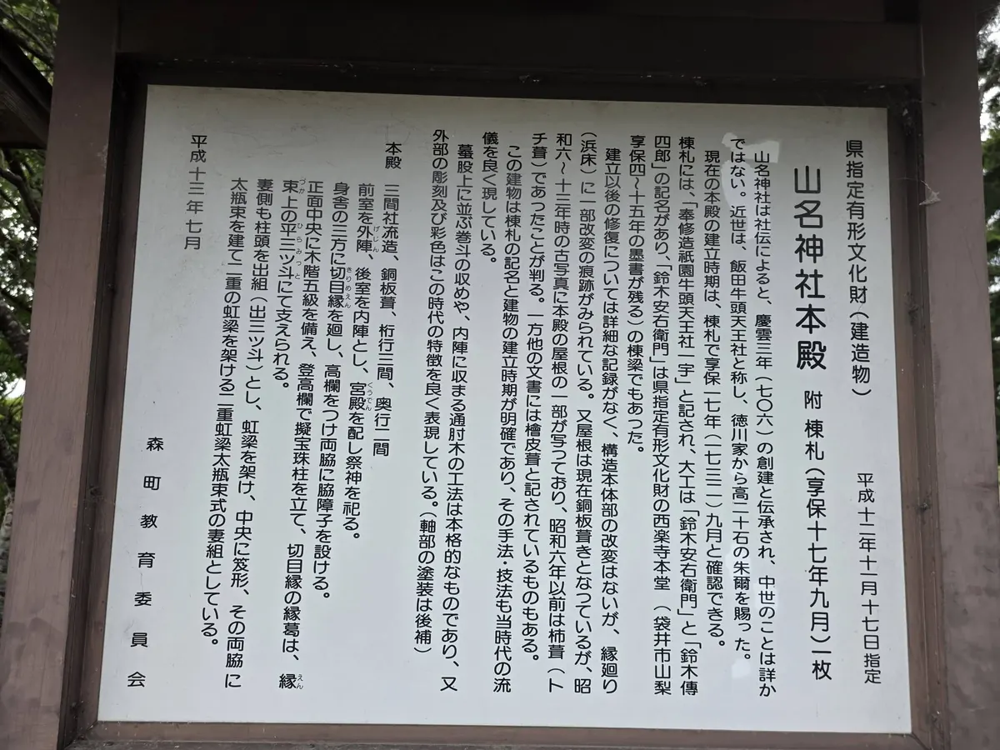

山名神社（やまなじんじゃ）

山名神社（やまなじんじゃ）は、森町飯田2590に鎮座する神社です。御祭神は素盞嗚命。所在地、祭礼の公開情報、地域との関わり、参拝時に守りたいことを一次資料に沿って整理します。
山名神社について
山名神社は、静岡県周智郡森町飯田2590に鎮座する神社です。読みは「やまなじんじゃ」です。静岡県神社庁の公開情報で、社名と所在地を確認できます。
御祭神は、同じ公開情報に「素盞嗚命」と記されています。神名の表記は資料によって異なることがあるため、このページでは出典の文字を尊重しています。
祭礼と地域行事
山名神社 天王祭舞楽：7月14日・15日に最も近い土曜・日曜 国指定重要無形民俗文化財「遠江森町の舞楽」
境内の舞殿で舞楽が奉納される。祇園（天王）信仰の流れをくむ祭礼。
ここに記した日付は参照資料の表記です。開催日時、奉納行事、観覧場所、交通規制は年によって変わることがあるため、訪問する年の主催者案内を優先してください。
所在地を確かめて訪ねる
所在地は静岡県周智郡森町飯田2590です。駐車場、進入路、公共交通、境内設備については公開資料だけでは分からないため、道路や私有地を臨時の駐車場所として扱わないでください。

参拝するときに大切にしたいこと
山名神社は地域の信仰の場です。社殿や境内を静かに拝観し、祭礼準備、清掃、祈祷などが行われているときは現地の案内に従ってください。建物の内部や祭具は、許可なく撮影しないことが基本です。
このページは山名神社の開門時間、授与品、祈祷受付、駐車可否を保証するものではありません。目的がある参拝では、公式サイトや掲載先がある場合に最新情報を確かめてから出発すると安心です。


飯田地区の中で見る
山名神社は森町の飯田地区にあります。地区ページでは、同じ地域に鎮座する神社をまとめて見られます。社ごとの由緒を一つにまとめず、所在地と出典を分けて読むための入口です。
飯田地区のほかの神社
出典と更新日
- 静岡県神社庁 神社紹介 山名神社（社名・鎮座地・御祭神・祭礼日を確認（2026-08-04））
- 森町 文化財情報（町内の文化財に関する公式案内）
基本情報の確認日は2026-08-04です。由緒本文の転載や、資料にない設備・行事の補完はしていません。神社または関係者から訂正の連絡をいただいた場合は、出典とともに更新します。
最終確認日：2026-08-10 ／ 本ページは公表情報を整理したものです。各神社の公式サイトではありません。記載の誤りは修正依頼からお知らせください。